편집 컷이 없습니다. 카메라가 캐릭터 → 쏟아지는 옥수수 → 용암(수직 부감) → 솟는 팝콘 → 다시 캐릭터로 한 번에 움직이는 AI 생성 원테이크입니다. 아래 '장면'은 편집 컷이 아니라 카메라 동선의 비트(구간)입니다. 8.83초·9.42초에 감지된 변화도 컷이 아니라 빠른 틸트·팬(카메라 이동)이었습니다.
왜 떡상했나 — 편집 장치를 시간대별로
0.0–1.2초1초 안에 설정 완성
캐릭터 + 옥수수 양동이 + 열린 헬기 문 + 아래서 올라오는 주황빛. 말 한마디 없이 '이제 뭘 할지' 궁금해짐 → 스와이프 방지.
전체컷 없는 원테이크
편집점이 없으니 이탈 타이밍도 없음. 실제 촬영 같은 연속 카메라가 '진짜 같다'는 착각을 줌.
3.3–4.7초1.5초의 정적 = 긴장
용암 위에서 아무 일도 안 일어나는 1.5초. 효과음도 바람 소리뿐 → 첫 '팝!'의 쾌감을 키움.
4.75–9.4초점점 커지는 폭발
팝 1개 → 수십 개 → 기둥 → 헬기 높이까지. '규칙 3단계' 에스컬레이션.
9.4–10.3초반전: 나한테 온다
구경하던 캐릭터가 팝콘에 파묻힘. 관찰자 → 피해자로 뒤집히는 순간.
10.3–12.0초무표정 엔딩 + 루프
팝콘에 묻힌 채 카메라를 멍하게 응시. 같은 헬기 안이라 첫 장면으로 자연스럽게 이어져 반복 재생을 유도(12초·완주율 극대화).
캡션짧은 말투 캡션
'~했다꾸이' 캐릭터 말투 + 이모지 1개. 화면 자막이 없으니 언어 상관없이 전 세계에 통함.
타임라인
막대 위에 마우스를 올리면 샷·자막·음성 내용이 보입니다.
하드컷휩/블러줌디졸브흰 플래시늘이기화면 자막음성(Whisper)
다른 동물로 바꾸기
선택하면 이 페이지의 모든 프롬프트에서 [CHARACTER]·[CHARACTER_2]·[MOM]·[DAD]가 자동으로 바뀝니다.
등장인물 슬롯
[CHARACTER] 주인공 1명
동물을 바꿔도 반드시 유지할 것
사람 같은 눈(쌍꺼풀·속눈썹) + 작은 사람 입술 — 이 '언캐니 귀여움'이 밈의 핵심. 동물만 바꾸고 이건 유지
통통한 공 모양 몸 + 짧은 팔다리 + 서서 행동하는 유아 자세
기본 표정은 무표정(데드팬)·반쯤 감긴 눈 → 반응 컷에서만 크게 변화(반짝 눈·눈물)
소품보다 작은 몸 크기(스케일 개그): 양동이·송편·감튀 상자와의 크기 대비
캐릭터 전용 한마디(원본은 '꾸이') → 새 캐릭터 이름 1~2음절로 통일, 말은 전부 이 소리로
캐릭터 시트 프롬프트 (Nano Banana Pro · 가장 먼저)
character reference sheet of [CHARACTER], same character shown 5 times on a plain light-grey background: front view, three-quarter view, side profile, back view, and a close-up of the face with neutral deadpan expression; consistent fur markings and proportions in every view; photoreal studio lighting, 9:16, no text, no watermark
샷별 분석 + 프롬프트
프레임 위 격자 = 3분할선. 색 띠 = 그 샷의 실제 색 팔레트.
B1
훅: 헬기 문 앞의 캐릭터
0.00–1.25초 · 1.25초
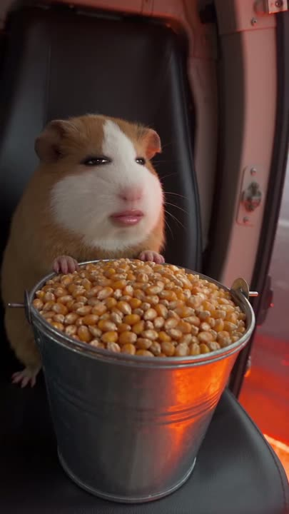
시작 0.00s중간 0.62s
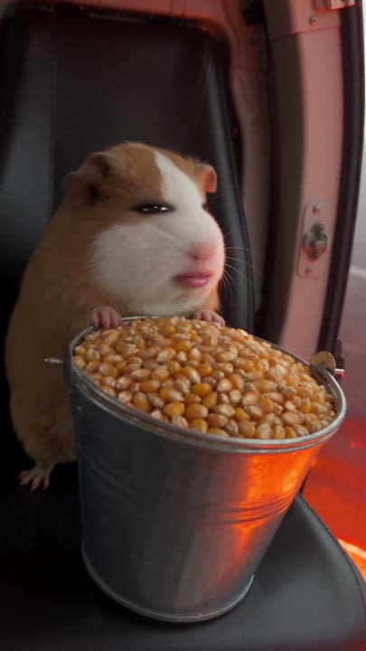
끝 1.25s
샷 크기
MCU (가슴 위)
앵글
아이레벨
렌즈 느낌
35mm 느낌, 얕은 심도
카메라 무빙
핸드헬드 미세 흔들림
구도·위치
캐릭터 좌측 1/3, 눈이 상단 1/3선. 양동이 하단 중앙. 오른쪽 가장자리에 헬기 문틀(세로선)
[CHARACTER] sitting upright on a black leather seat at the open side door of a helicopter with rose-pink interior panels, hugging a large galvanized steel bucket overflowing with dried popcorn kernels; outside the door a hazy sky and, far below, an enormous glowing lava lake casting warm orange light up onto the bucket and the chin; medium close-up, eye level, 35mm, character on the left third, door frame on the right edge, hyperrealistic photograph, vertical 9:16, shot on a full-frame cinema camera, soft natural light, shallow depth of field, crisp individual fur strands, subtle film grain, no text, no watermark, no logo
영상 프롬프트 (필요 1.25초 → 4초 생성)
0.0-1.2s: [CHARACTER] looks into the lens and squeaks 'kkui kkui' in a tiny high-pitched voice, slight handheld camera shake, rotor wind outside Vertical 9:16, photoreal, keep the character identical to the reference.
💡 원테이크로 한 번에 생성하는 것이 원본과 가장 가깝습니다(아래 A안).
B2
양동이 기울이기 → 문 밖 공개
1.25–2.00초 · 0.75초
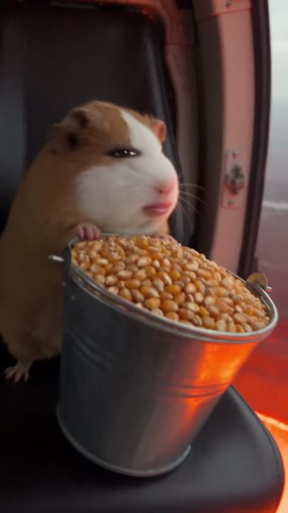
시작 1.25s
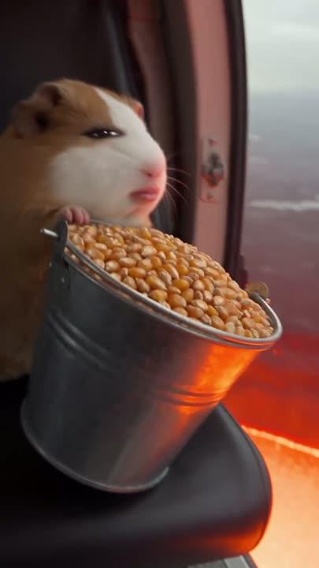
중간 1.62s
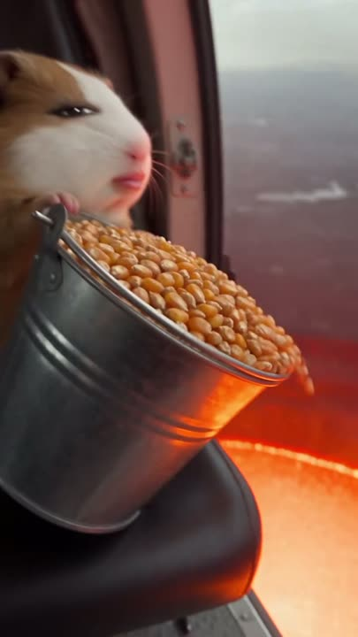
끝 2.00s
샷 크기
MCU → MS
앵글
아이레벨 → 약간 부감
렌즈 느낌
35mm
카메라 무빙
팬 라이트 + 틸트 다운(양동이를 따라감)
구도·위치
양동이가 화면 중앙→우하단으로 이동, 문 밖 하늘·붉은 빛이 우측에서 열림
동작·표정
양동이를 문 밖으로 기울임
배경·소품
헬기 문턱·스키드 일부, 멀리 용암의 붉은 빛
조명
주황 반사광이 점점 강해짐
화면 자막
없음
소리
금속 양동이 달그락 (1.3초)
다음 전환
연속
추천 모델Seedance 2.5bytedance/seedance-2-5
영상 프롬프트 (필요 0.75초 → 4초 생성)
1.2-2.0s: it tips the bucket out of the open door; the camera pans right and tilts down following the bucket, revealing the glowing orange below Vertical 9:16, photoreal, keep the character identical to the reference.
B3
쏟아지는 옥수수 팔로우
2.00–3.25초 · 1.25초
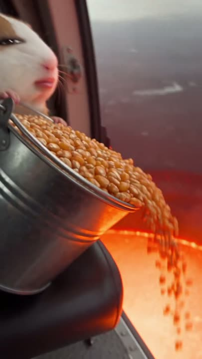
시작 2.00s
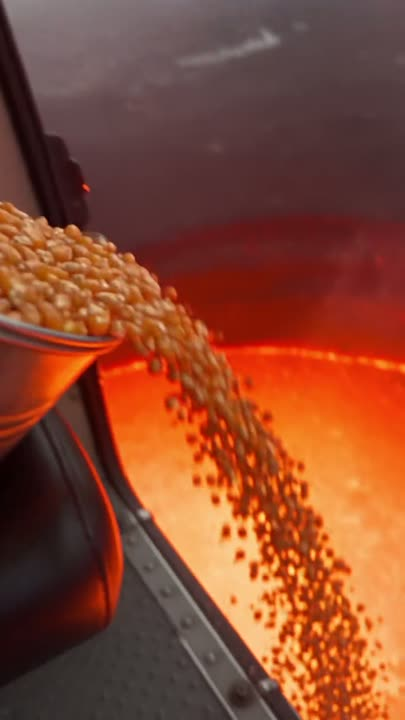
중간 2.62s
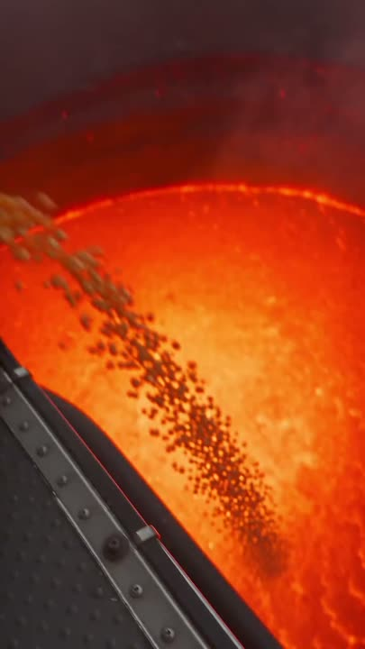
끝 3.25s
샷 크기
인서트
앵글
부감으로 전환 중
렌즈 느낌
28~35mm
카메라 무빙
연속 틸트 다운(약 90°), 낙하 알갱이 추적
구도·위치
좌상단 양동이 → 대각선으로 흐르는 옥수수 줄기 → 우하단 용암. 좌하단에 검정 헬기 스키드(리벳) 사선
2.0-3.2s: a stream of kernels pours out and falls; the camera keeps tilting down following the kernels, the black helicopter landing skid enters from the lower left Vertical 9:16, photoreal, keep the character identical to the reference.
B4
탑다운 정적 (긴장 빌드업)
3.25–4.75초 · 1.50초
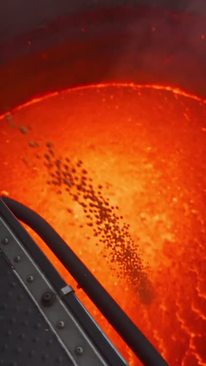
시작 3.25s
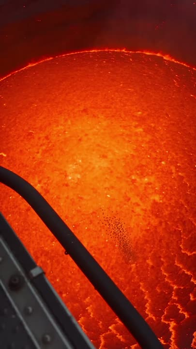
중간 4.00s
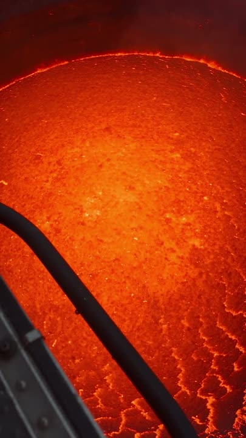
끝 4.75s
샷 크기
익스트림 와이드
앵글
수직 부감(탑다운 POV)
렌즈 느낌
24~28mm
카메라 무빙
거의 정지(아주 느린 드리프트)
구도·위치
화면 전체가 용암 호수. 좌하→중앙으로 헬기 스키드 대각선(리딩 라인). 알갱이는 중앙에서 사라짐
straight top-down view from a hovering helicopter onto a vast lava lake with glowing yellow cracks in a dark orange crust, the black landing skid crossing diagonally from the lower-left corner, tiny falling popcorn kernels disappearing into the lava, hyperrealistic photograph, vertical 9:16, shot on a full-frame cinema camera, soft natural light, shallow depth of field, crisp individual fur strands, subtle film grain, no text, no watermark, no logo
영상 프롬프트 (필요 1.50초 → 4초 생성)
3.2-4.7s: straight top-down view of the lava lake; the kernels vanish; calm, suspenseful pause Vertical 9:16, photoreal, keep the character identical to the reference.
💡 3클립(B안)으로 만들 때 C1의 끝 프레임 = 이 이미지.
B5
팝! → 팝콘 기둥
4.75–8.25초 · 3.50초
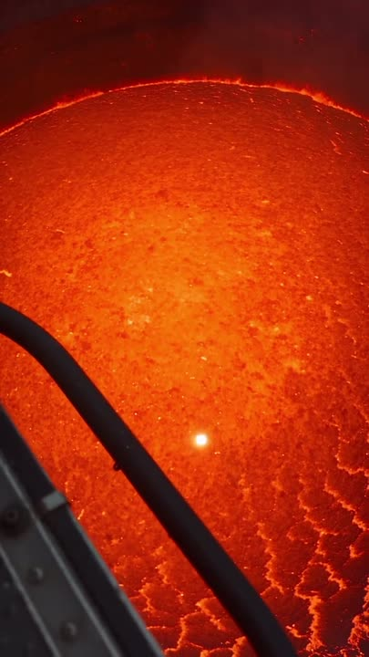
시작 4.75s
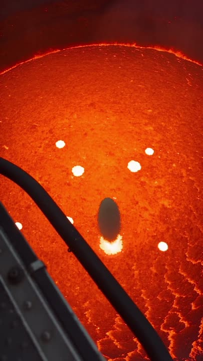
중간 6.50s
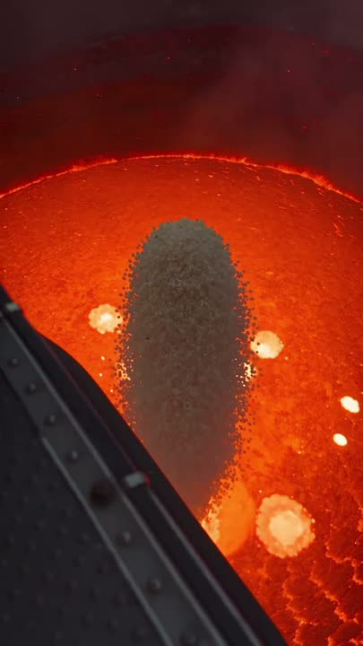
끝 8.25s
샷 크기
익스트림 와이드(탑다운 유지)
앵글
수직 부감
렌즈 느낌
24~28mm
카메라 무빙
정지 → 살짝 풀백
구도·위치
중앙에서 흰 팝콘 기둥이 카메라 쪽으로 솟으며 타원이 점점 커짐(원근). 주변에 불꽃 같은 팝 여러 개
4.7-8.2s: a single popcorn kernel pops with a bright flash, then dozens pop, then a massive column of white popcorn erupts upward toward the camera, crackling Vertical 9:16, photoreal, keep the character identical to the reference.
9.4-10.3s: the camera pans left to [CHARACTER] staring blankly at the popcorn tower; a wave of popcorn floods into the cabin and engulfs it Vertical 9:16, photoreal, keep the character identical to the reference.
[CHARACTER] buried chest-deep in a mountain of fresh popcorn inside a helicopter cabin, only its head and front paws above the popcorn, deadpan stare into the lens, a few kernels tumbling, medium close-up, centered, hyperrealistic photograph, vertical 9:16, shot on a full-frame cinema camera, soft natural light, shallow depth of field, crisp individual fur strands, subtle film grain, no text, no watermark, no logo
영상 프롬프트 (필요 1.74초 → 4초 생성)
10.3-12s: buried chest-deep in popcorn, deadpan stare into the lens, a few kernels settle Vertical 9:16, photoreal, keep the character identical to the reference.
💡 A안에서는 끝 프레임(imageTail)으로 넣으면 엔딩 구도가 고정됩니다.
생성 계획
A안 (추천) — 원테이크 1회 생성
Seedance 2.5 · 이미지→영상 · duration 12 · 1080p · generateAudio 켬 · 첫 프레임 = B1 이미지 · 끝 프레임 = B8 이미지
프롬프트 / 설정
One continuous take, no cuts, handheld documentary camera, realistic physics. 0-1.2s: [CHARACTER] at the open helicopter door hugging a bucket of popcorn kernels looks into the lens and squeaks 'kkui kkui'. 1.2-2s: it tips the bucket out of the door; the camera pans right and tilts down following the bucket. 2-3.2s: a stream of kernels pours out; the camera keeps tilting down following them, the black landing skid enters lower-left. 3.2-4.7s: straight top-down view of a vast lava lake; the kernels vanish; calm suspenseful pause. 4.7-8.2s: one kernel pops with a bright flash, then dozens, then a massive column of white popcorn erupts upward toward the camera. 8.2-9.4s: the camera tilts up as the column rises past the door. 9.4-10.3s: the camera pans left to [CHARACTER] staring blankly; popcorn floods into the cabin and engulfs it. 10.3-12s: buried chest-deep in popcorn, deadpan stare into the lens. Sound: rotor wind, lava rumble, popcorn crackling, tiny squeaky 'kkui kkui'.
C1 = Seedance 2.5 또는 Kling v3 Omni, 5초, 첫 프레임 B1 / 끝 프레임 B4. C2 = MiniMax H3(-max), 5초, 첫 프레임 = C1 마지막 프레임, 프롬프트 = B5+B6. C3 = Kling v3 Omni, 4초, 첫 프레임 = C2 마지막 프레임, 끝 프레임 B8, 프롬프트 = B7+B8. MiniMax는 오디오가 없으므로 edl_rank1_3clips.json의 효과음 11개로 사운드를 채움
예상 크레딧: 약 150~250 (할인가) × 시도
전환 효과
시간
종류
길이
설명
FFmpeg
CapCut
프리미어/애펙
8.83초
카메라 틸트 업 (편집 전환 아님)
약 7프레임(209~216)
AI 영상 안의 카메라 이동. 편집으로 흉내 낼 땐 필요 없음
—
—
—
9.42초
팬 레프트 + 팝콘 와이프 (편집 전환 아님)
약 19프레임(217~236)
팝콘이 화면을 덮는 '오브젝트 와이프'. 분할 생성(B안)이면 여기서 이어붙이면 이음새가 안 보임
xfade=transition=fade:duration=0.25
기본 > 디졸브 0.25초
Cross Dissolve 6f(24fps)
전환 전후 프레임 (가운데가 전환 지점)
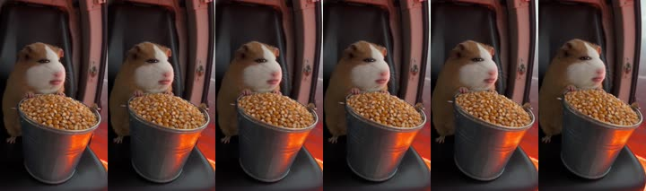
1.25초 · 없음(연속 카메라)
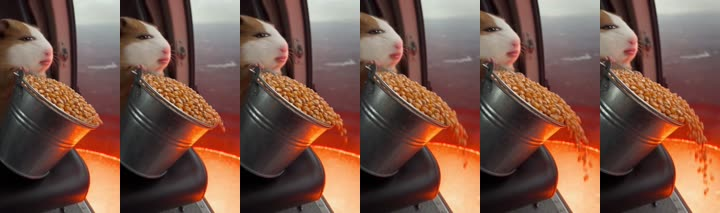
2.00초 · 연속
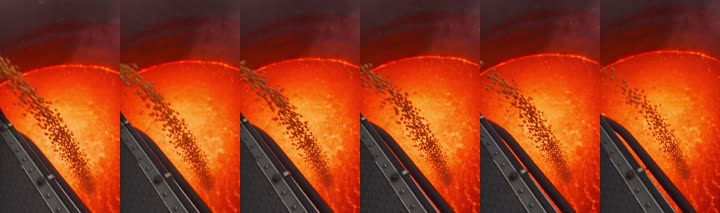
3.25초 · 연속
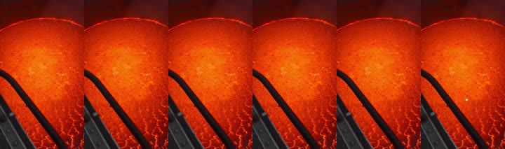
4.75초 · 연속
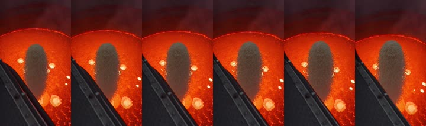
8.25초 · 연속
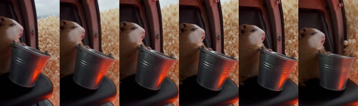
9.40초 · 연속
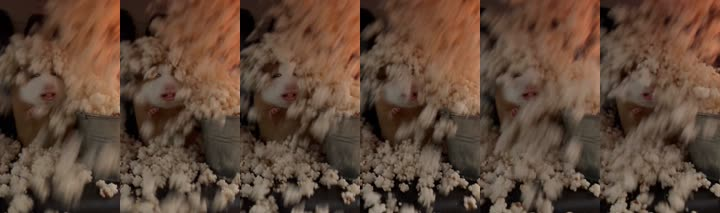
10.30초 · 연속
사운드 디자인
배경음악 없음. 캐릭터 목소리('꾸이 꾸이') + 현장 효과음만. 전체 -14.9 LUFS(인스타 권장 범위), LRA 6.4 LU, 트루피크 0.0 dBFS(클리핑 직전 → 재현 시 -1 dBTP 권장). 4.85초에 소리가 폭발적으로 커짐(조용→팝).
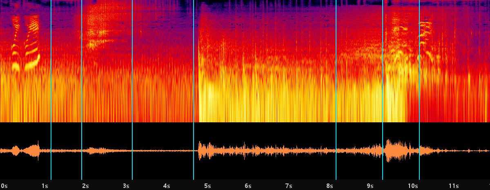
위: 스펙트로그램(세로 밝은 줄 = 타격음/효과음, 가로 줄무늬 = 목소리·멜로디), 아래: 파형. 하늘색 선 = 컷 위치. 측정: -14.9 LUFS · LRA 6.4 · 트루피크 -0.0 dBFS
시간(초)
소리
메모
0.0–12.0
헬기 바람·로터 베드
아주 작게(-18 dB), 3초 이후 용암 저음 럼블 추가
0.2–0.9
'꾸이 꾸이' (귀여운 고음)
입 모양과 싱크
1.3
금속 양동이 달그락
-8 dB
2.0–3.0
옥수수 쏟아지는 촤르르
-6 dB
4.75
첫 '팝' + 지글
0 dB — 가장 중요한 한 방
4.85–8.8
팝콘 튀는 소리 밀도 상승 + 보글보글
점점 크게
8.8
휘익(위로)
-6 dB
9.35
쿵 + 팝콘 와르르
0 dB
9.7–10.5
'꾸이 꾸이!' (놀람)
-3 dB
10.3–12.0
팝콘 부스럭 잔향
-9 dB, 페이드아웃
목소리
'꾸이'는 캐릭터 이름 = 말버릇. 영상 모델 오디오로 'tiny squeaky high-pitched voice saying kkui kkui'를 넣거나, 직접 녹음 후 FFmpeg로 음정만 올리기: ffmpeg -i my_voice.wav -af "asetrate=48000*1.5,aresample=48000,atempo=0.8" kkui.wav (약 +7반음, 속도는 비슷하게 유지)
효과음 프롬프트 (ElevenLabs SFX 등 · 영상 모델 오디오로 부족할 때)
helicopter cabin interior, open side door, steady rotor wind rumble, 12 seconds
효과음 프롬프트 (ElevenLabs SFX 등 · 영상 모델 오디오로 부족할 때)
hundreds of popcorn kernels popping rapidly over bubbling lava, crackling and sizzling, rising intensity, 4 seconds
효과음 프롬프트 (ElevenLabs SFX 등 · 영상 모델 오디오로 부족할 때)
huge avalanche of popcorn crashing into a small cabin, whoosh and soft rustling impact, 1.5 seconds
편집 레시피 — FFmpeg · HyperFrames
작업 폴더 만들기: edl_rank1_onetake/ 안에 edl_rank1_onetake.json, clips/(S01.mp4…), fonts/(Pretendard-SemiBold.otf, NotoSansJP-SemiBold.ttf)
✅ 검증함: 더미 클립으로 실제 렌더 → 길이 정확(12.04초), 모든 샷이 제 시간 구간에 나오는지 색상 검사 통과, 한·영·일 3줄 자막·♬ 기호 렌더 확인. 결과: 1080×1920 · 24fps · H.264 CRF18 · AAC 192k · -14 LUFS / -1 dBTP.
/hyperframes 스킬로 kit/hyperframes/rank1_onetake/index.html 컴포지션을 작업해줘. 이 파일은 edl_rank1_onetake.json 편집표에서 자동 생성된 것이고 컷 타이밍·전환·자막 위치가 원본 측정값과 같다. 수정 가능 범위: clips/ 파일 교체, 자막 문장, 전환 강도만. 규칙: 1) clips/ fonts/ 폴더를 index.html 옆에 둔다 2) npx hyperframes check 0건 통과 3) 문제 컷은 npx hyperframes snapshot --at 으로 확인 4) npx hyperframes preview --background 로 내가 확인한 뒤, 내가 승인하면 render. 승인 전 render 금지.
생성된 파일: kit/hyperframes/rank1_onetake/index.html · 자체 규칙 검사 통과(중복 id·audio id·crossorigin·<br>). ⚠️ HyperFrames CLI가 이 PC에 없어 npx hyperframes check는 아직 못 돌렸습니다.
모델 선택표
영상 모델
Pollo ID
스펙(실측 조회)
이런 컷에
Seedance 2.5
bytedance/seedance-2-5
이미지→영상·레퍼런스→영상 / 4~30초 / 최대 1080p / 첫·끝 프레임 / 네이티브 오디오 / 참조 이미지 최대 30장
원작자 캡션에 #capcutseedance25 표기 → 같은 계열. 긴 원테이크·캐릭터 일관성·음성까지 한 번에
Kling v3 Omni
kling-ai/kling-v3-omni
3~15초 / std·pro·4K / 첫·끝 프레임 / 네이티브 오디오 / 레퍼런스→영상
표정 연기·손으로 소품 다루기·두 캐릭터 동시 연기에 강한 편(일반 평판)
MiniMax H3
minimax/minimax-h3 (고품질: minimax-h3-max)
4~15초 / 최대 2K / 첫·끝 프레임 / 레퍼런스→영상 / 오디오 옵션 없음(후반에 효과음)
튀김·반죽·팝콘 폭발 같은 물리 움직임이 강한 편(하이루오 계열 평판)
Google Gemini Omni 1.1 Flash
google/gemini-omni-1-1-flash
3~10초 / 9:16 / 최대 4K / 첫·끝 프레임 / 레퍼런스→영상
9:16 네이티브·4K 지원 → 음식 클로즈업·인서트 컷 화질용 (품질은 테스트 필요)
Google Veo 3.1
google/veo-3-1
4·6·8초 / 9:16 / 1080p·4K / 첫·끝 프레임 / 네이티브 오디오(대사)
사람 배우 + 한국어 대사 립싱크가 필요한 컷(3위 보디빌더, 2위 부모님 대사)
Hailuo 2.3
minimax/hailuo-2-3
6·10초 / 768p·1080p(6초만) / 끝 프레임 없음
0.4~1초짜리 짧은 인서트를 싸게 뽑을 때
이미지
Nano Banana Pro
google/nano-banana-pro
캐릭터 시트를 참조로 넣고 샷별 첫 프레임 만들기(일관성 1순위)
Seedream 5.0 Pro
bytedance/seedream-5-0-pro
Seedance와 같은 회사 — 실사 털·음식 질감
GPT Image 2
openai/gpt-image-2
소품·간판·포장지 디테일 수정
Flux Kontext Max
flux/flux-kontext-max
기존 키프레임 부분 수정(표정만 바꾸기 등)
음악·목소리
Suno v5.5
suno/suno-v5-5
배경음악(징글) — 1회 2곡 생성, 18크레딧
ElevenLabs v3
elevenlabs/eleven-v3
사람 대사(한국어) TTS
MiniMax Speech 2.8 HD
minimax/speech-2-8-hd
한국어 대사 TTS 대안
Seed Audio 1.0
bytedance/seed-audio-1-0
TTS 대안
예상 크레딧 (Pollo 견적 도구 실측, 차감 없음)
Seedance 2.5 · 1080p · 12초 · 오디오
720 (할인 288)
Seedance 2.5 · 720p · 5초 · 오디오
150 (할인 60)
Kling v3 Omni · pro · 5초 · 오디오
50 (할인 20)
MiniMax H3 · 768p · 5초
50
Google Omni 1.1 Flash · 1080p · 5초
50
Veo 3.1 · 1080p · 4초 · 오디오
120 (할인 48)
Nano Banana Pro 이미지 1장
18 (할인 9)
Suno v5.5 음악 (2곡)
18
제작 순서
단계
할 일
크레딧
① 캐릭터 시트
Nano Banana Pro로 [CHARACTER] 시트 1장 (정면·측면·후면·얼굴). 이후 모든 컷의 참조 이미지로 사용
9~18 크레딧
② 샷별 첫 프레임
각 샷의 '이미지 프롬프트' + 캐릭터 시트 참조 → 키프레임 생성. 원본 캡처와 구도 비교
샷 수 × 9~18
③ 샷별 영상
키프레임을 첫 프레임으로 넣고 '영상 프롬프트' 실행. 필요한 길이보다 0.5초 이상 길게
모델별 표 참고
④ 사운드
네이티브 오디오 확인 → 부족하면 효과음/음악/보이스 추가 (사운드 섹션)
0~20
⑤ 파일 정리
clips/S01.mp4 … 편집표(EDL)의 파일명 그대로 저장, fonts/에 Pretendard·Noto Sans JP
무료
⑥ 자동 편집
python edl_render.py edl_xxx.json → 원본과 같은 컷 타이밍·전환·3줄 자막·-14 LUFS